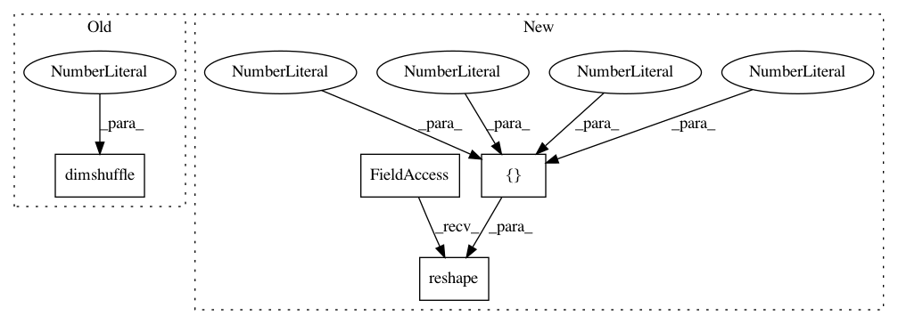

70cf20f6cf5e21c3b6165067483b925db61c161c,deepmedic/neuralnet/ops.py,,applyPrelu,#Any#Any#Any#Any#,112
Before Change
//input is a tensor of shape (batchSize, FMs, r, c, z)
aPreluValues = np.ones( (numberOfInputChannels), dtype = "float32" )*0.01 //"Delving deep into rectifiers" initializes it like this. LeakyRelus are at 0.01
aPrelu = theano.shared(value=aPreluValues, borrow=True) //One separate a (activation) per feature map.
aPreluBroadCastedForMultiplWithChannels = aPrelu.dimshuffle("x", 0, "x", "x", "x")
posTrain = T.maximum(0, inputTrain)
negTrain = aPreluBroadCastedForMultiplWithChannels * (inputTrain - abs(inputTrain)) * 0.5
outputTrain = posTrain + negTrain
After Change
//input is a tensor of shape (batchSize, FMs, r, c, z)
aPreluValues = np.ones( (numberOfInputChannels), dtype = "float32" ) * 0.01 //"Delving deep into rectifiers" initializes it like this. LeakyRelus are at 0.01
aPrelu = tf.Variable(aPreluValues, name="aPrelu") //One separate a (activation) per feature map.
aPrelu5D = tf.reshape(aPrelu, shape=[1, numberOfInputChannels, 1, 1, 1] )
posTrain = tf.maximum(0., inputTrain)
negTrain = aPrelu5D * (inputTrain - abs(inputTrain)) * 0.5
outputTrain = posTrain + negTrain
In pattern: SUPERPATTERN
Frequency: 3
Non-data size: 4
Instances
Project Name: Kamnitsask/deepmedic
Commit Name: 70cf20f6cf5e21c3b6165067483b925db61c161c
Time: 2018-06-17
Author: konstantinos.kamnitsas12@imperial.ac.uk
File Name: deepmedic/neuralnet/ops.py
Class Name:
Method Name: applyPrelu
Project Name: Kamnitsask/deepmedic
Commit Name: 70cf20f6cf5e21c3b6165067483b925db61c161c
Time: 2018-06-17
Author: konstantinos.kamnitsas12@imperial.ac.uk
File Name: deepmedic/neuralnet/ops.py
Class Name:
Method Name: makeBiasParamsAndApplyToFms
Project Name: Kamnitsask/deepmedic
Commit Name: 70cf20f6cf5e21c3b6165067483b925db61c161c
Time: 2018-06-17
Author: konstantinos.kamnitsas12@imperial.ac.uk
File Name: deepmedic/neuralnet/ops.py
Class Name:
Method Name: applySoftmaxToFmAndReturnProbYandPredY